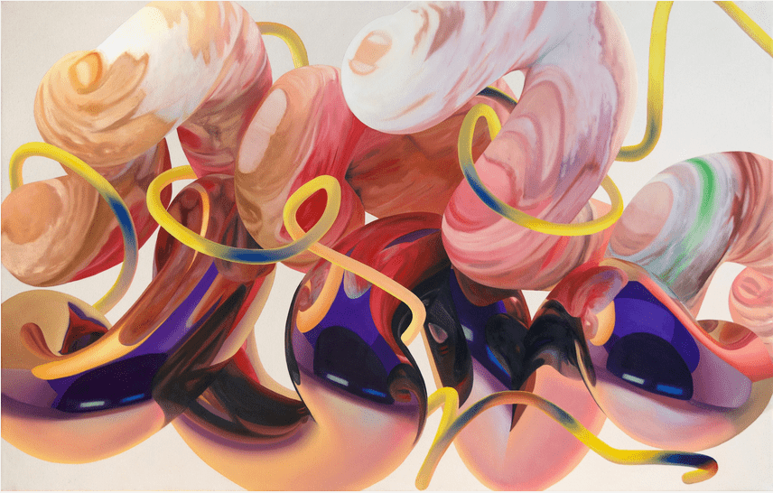

Overview
I have read “Speaking Code: Coding as Aesthetic and Political Expression” by Geoff Cox and Alex McLean. This article explores the role of code from different perspectives, especially its impacts in the fields of language, power, finance, and society, as well as the potential of code in aesthetic and political expression.

In the article, the authors compare the function of code with “prophecy”, which makes me think deeply about the influence of code on social behaviour. In the financial field, code is used for real-time calculation and prediction. Such behaviour can actually control and change market trends. This is similar to the concept of “self-fulfilling prophecy”. Code, to some extent, “foretells” certain results, thus influencing people’s behaviour. For example, financial code manipulates consumption behaviour and lifestyles. People can regulate the market through algorithms and may even affect the global economic order. This viewpoint makes me think that code is not only a technical issue but also has extensive social impacts and can even shape our expectations for the future.
Another point discussed in the article is the aesthetic potential of code, mentioning the expressive possibilities of code beyond strict grammatical and logical rules. By comparing it with poetry, the authors believe that code can also, like poetry, carry rich emotions and creativity. This viewpoint makes me reexamine the possibilities of code. I realize that code is not merely the product of logic. It can be like a work of art, breaking existing rules and limitations and expressing thoughts and emotions in new ways. For example, digital art generated by code can provide brand-new experiences in terms of visualisation and interactivity, making art creation no longer restricted by traditional media.
To sum up, this article has enabled me to have a more comprehensive understanding of the multifaceted nature of code. It can not only serve as a technical tool but also has linguistic, aesthetic, and social values. Code can be used for aesthetic expression and even as a tool for social criticism. Its potential far exceeds my previous understanding. Meanwhile, I also realise that when writing code, one needs to consider the social and political implications it contains. Code design is not simply a technical decision but will affect the social structure in practice. Therefore, when designing, I should focus on the transparency, fairness, and users’ sense of participation in the code. Finally, by thinking about the linguistic characteristics of code, I understand that code can, like poetry, have unlimited expressive space. This realisation makes me more confident in exploring the applications of code in art creation and social criticism, using it as a tool for thought expression and social innovation.